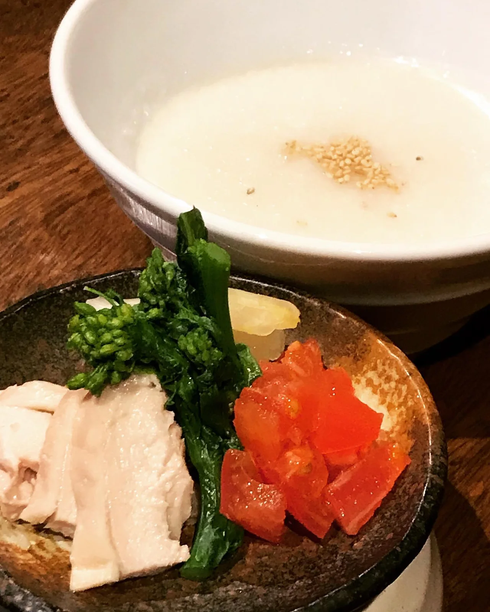
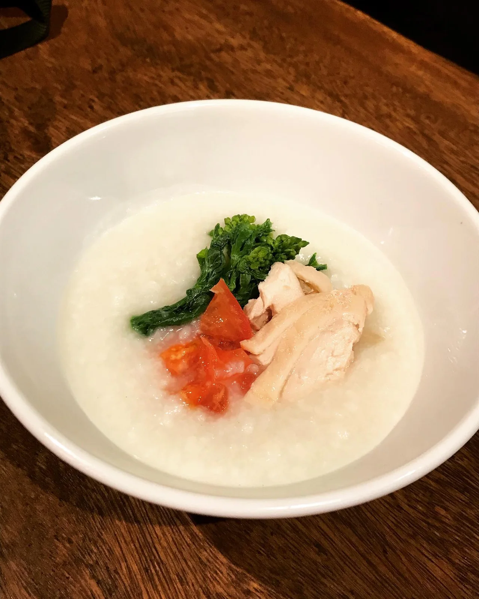
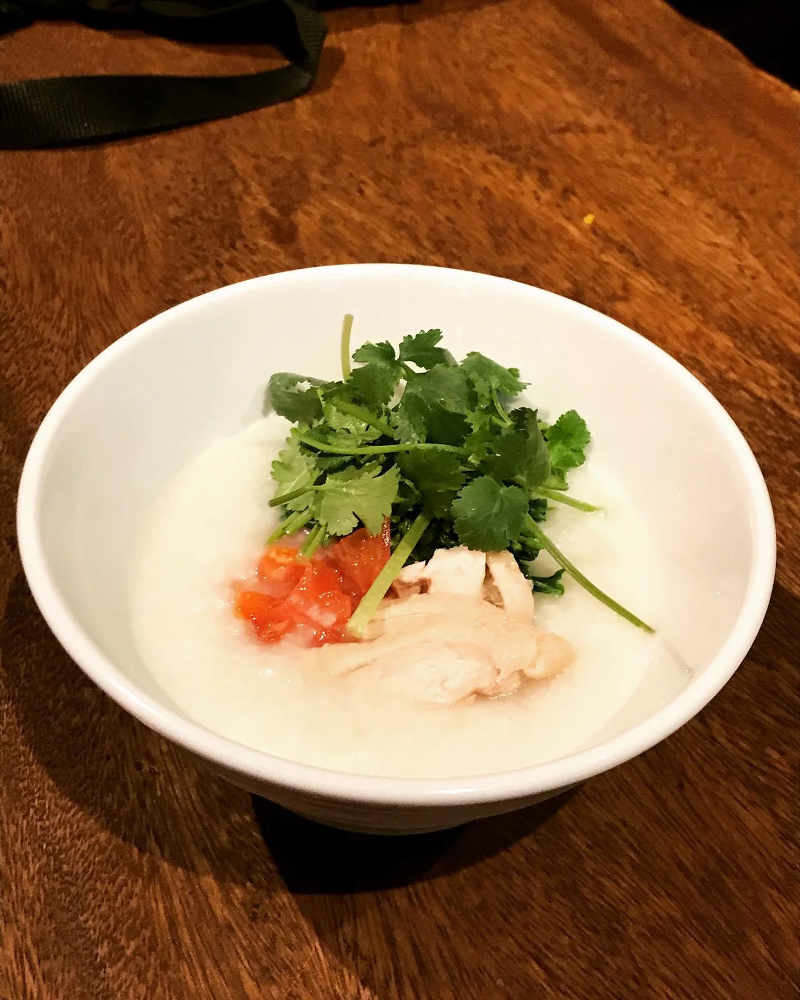

2020年2月26日
中華粥始めまーす！！ 胃腸疲れてまへんか！？



中華粥始めまーす！！ 胃腸疲れてまへんか！？ 最後にあっさりほっこり中華粥でシメましょ！！ 第一弾は、 白菜漬物と蒸し鶏と菜の花とトマトのお粥です！！ オプションでパクチーつけれますよ！ これからも種類増やします！ 4月末までメニューイン！！ お待ちしてまーす！ #中華バル #中華 #中華料理 #福島グルメ #路地裏 #B級グルメ #中国 #チャイニーズ #路地裏チャイニーズ有馬 #中華粥 #ほっこり #もっこり